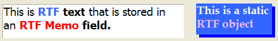

RTF Overview
Alpha Five supports RTF (Rich Text Formatted) data in the following ways:
Rich Text Format Table Fields (data that you can store in your database and display on a layout)
Conditional Rich Text Table Fields (table fields that are conditional displayed on a layout)
Rich Text Format Objects (formatted text controls that you display on a layout)
Rich Text Data (formatted text contained in a variable)
Rich Text Controls on Xdialog forms
A Rich Text Format field, also known as a Rich Text Field, is used for storing formatted text-documents in a table, allowing you to organize documents and even create an online publishing system. Picture
{kind=link}

A Rich Text Format object, also known as a Rich Text Object, provides a means for mixing and formatting text, fields, and calculations using a variety of fonts, point sizes, alignment options, and other design attributes.
Using Rich Text you can:
Use the Rich Text Editor to create a document or format a layout : Alpha Five's <span class=Screen>Rich Text Editor</span> gives you powerful word-processing capabilities. You can use a variety of fonts, styles, and sizes, align paragraphs of text, insert page breaks, find and replace words and phrases, and more.
Import and Export Rich Text : The Rich Text Editor lets you paste Rich Text Format text into a Rich Text Field or Rich Text Object. Likewise, Rich Text Fields and Objects can be copied to for use in other applications, such as Microsoft Word and Microsoft WordPad.
Place a Rich Text Field or Rich Text Object on a layout : Rich Text Objects and Fields can be placed on any type of layout. The Allow growth when printing option allows the field or object to size itself, making layout design easy.
Add fields and calculations to a Rich Text Object : Alpha Five lets you embed fields and calculations into a Rich Text Object that flow seamlessly with the text around it. You can also suppress blank lines caused by empty fields.
Create conditions to include or exclude paragraphs in a Rich Text Object : Rich Text Objects can use conditional statements to conditionally include words, sentences, or paragraphs. For example, you are creating a letter to send to customers in the United States and in England at the beginning of July. For customers who live in the United States, you want to include a paragraph that states "Have a safe and happy July Fourth!" For customers in England, you want to include a paragraph that states "Have a terrific summer!" You can set conditions to print the appropriate paragraph based on the country in which the customer lives.
See Also
Working with Rich Text Fields, Working with Rich Text Objects, Working with RTF Data, Working with Conditional Rich Text Fields, RTF Functions and Methods